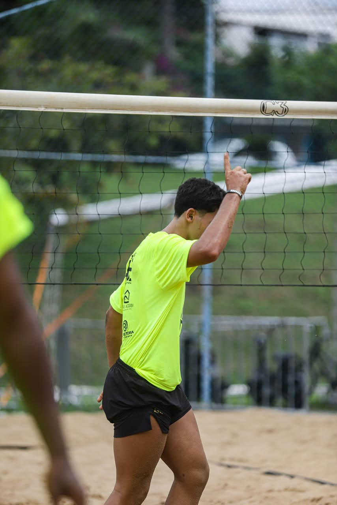
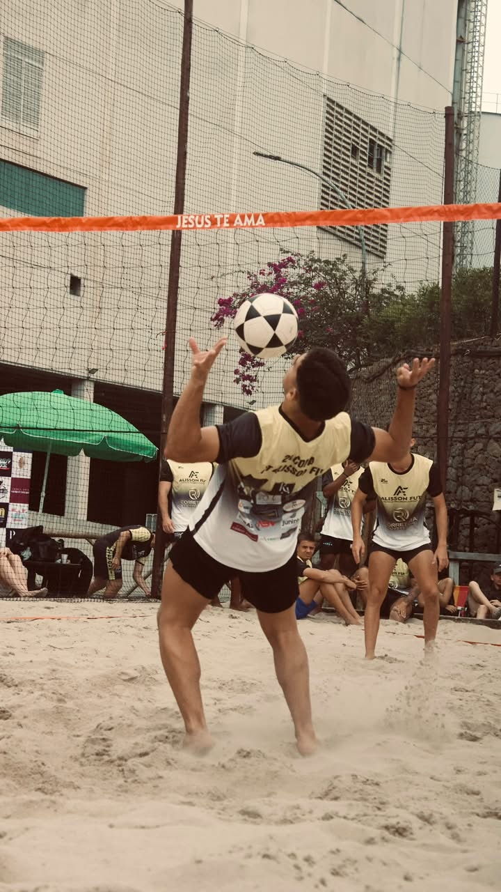
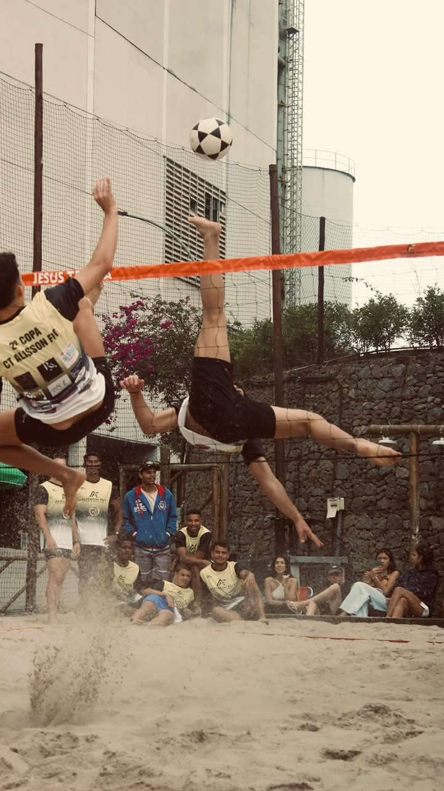
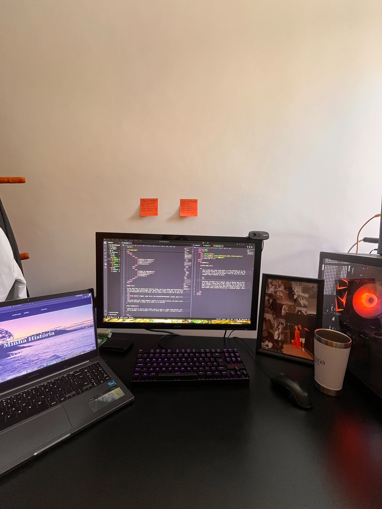
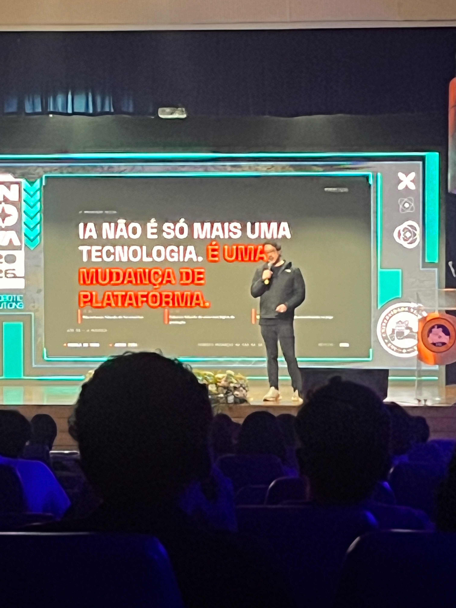
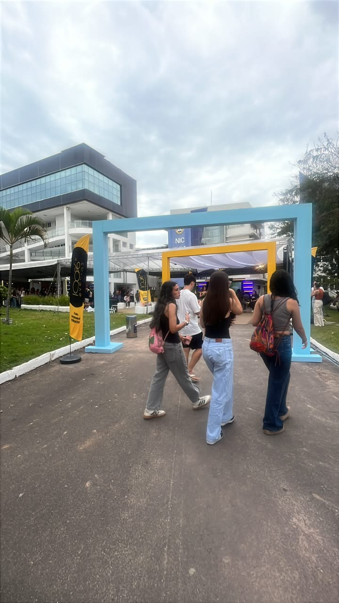
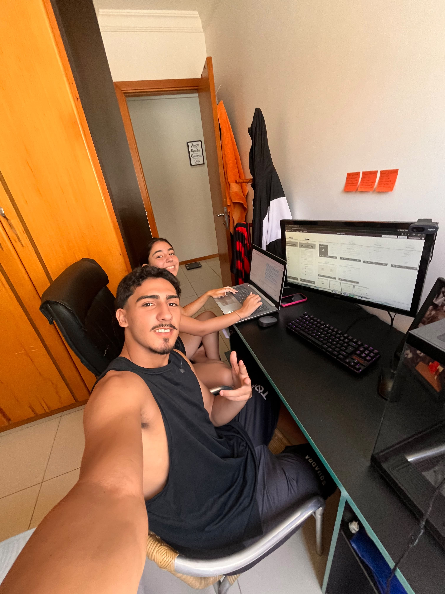
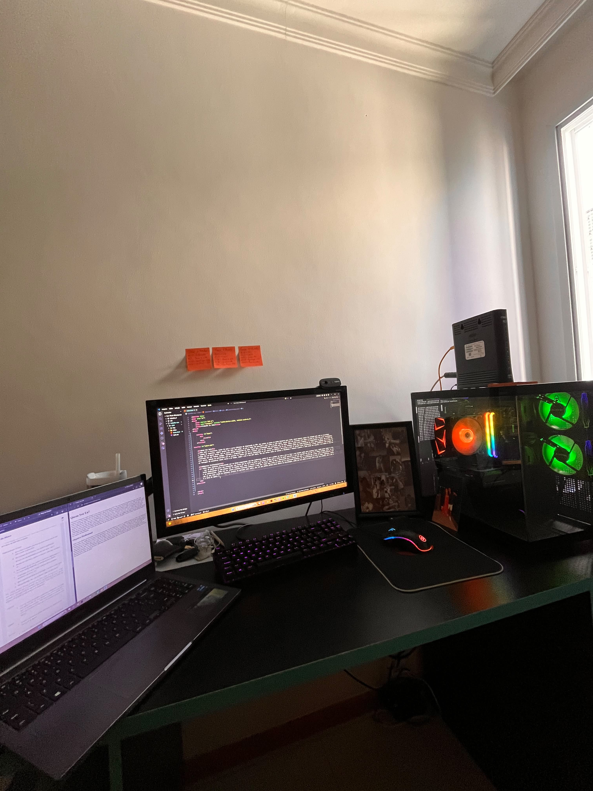
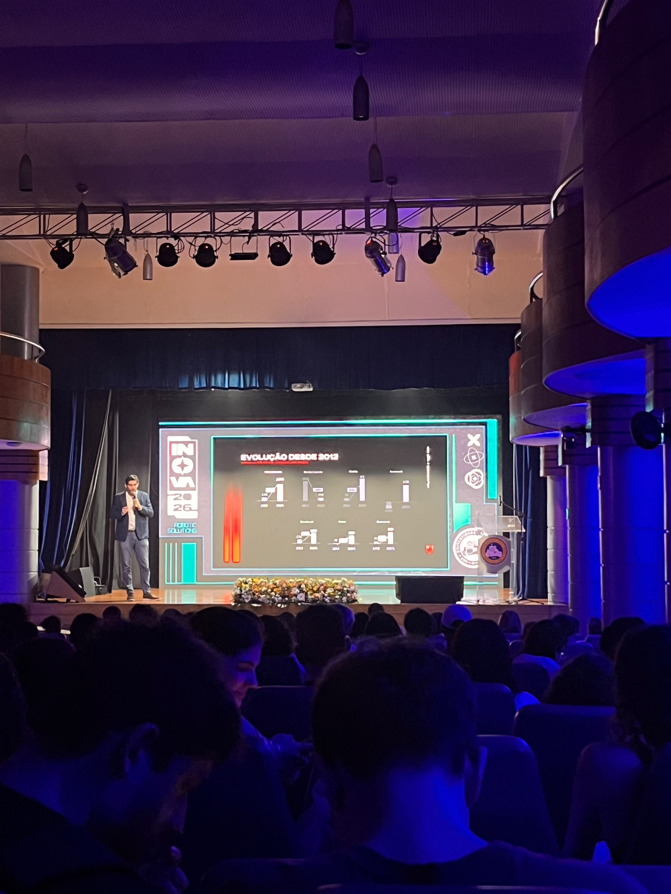

Vídeos e Fotos dos Meus Hobbies
Futevôlei — Vídeos
Futevôlei — Fotos




Minha Rotina de Estudos






Como eu tinha dito, tenho vários hobbies e um dos principais é o futevôlei. Tenho diversos troféus de campeonatos e o esporte já foi um plano B para minha vida. Não pretendo desistir dele, mas atualmente minha prioridade é a faculdade. Sei que preciso estudar e focar nos meus objetivos para conquistar coisas importantes no futuro.
Também gosto de outros esportes, tanto físicos quanto digitais. Futebol e futevôlei são meus favoritos. Nos jogos digitais, gosto muito de CS:GO e Valorant. Prefiro jogos em primeira pessoa, mas também gosto bastante de jogos de Fórmula 1 e drift.
Sou uma pessoa ativa e proativa, então gosto de estar sempre fazendo coisas diferentes. Atualmente estou dedicando bastante tempo à criação de projetos e aos estudos de programação. Estou fazendo cursos e desenvolvendo programas básicos para aprender aos poucos e entender melhor como os códigos funcionam.








